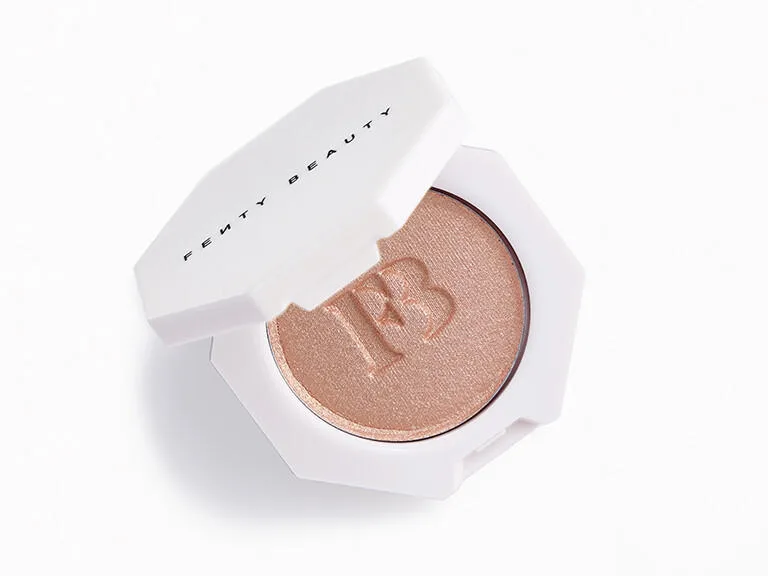
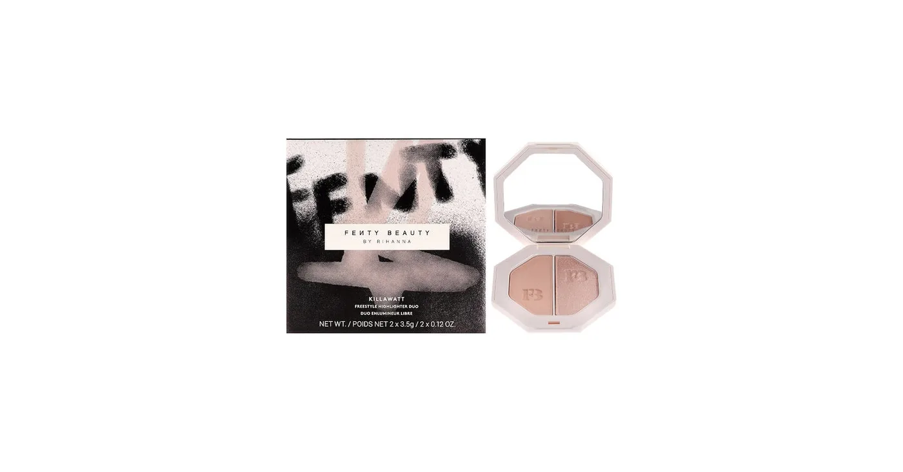
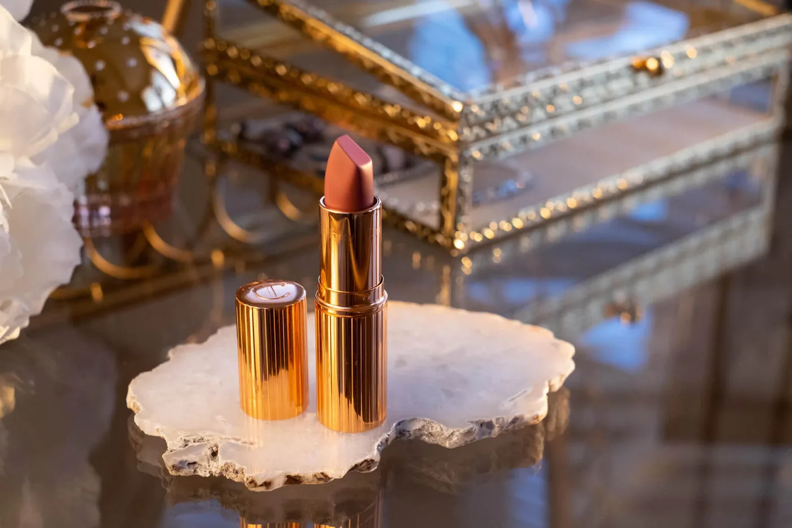
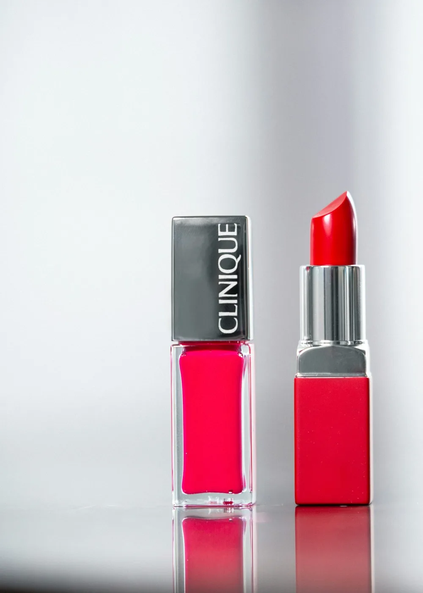
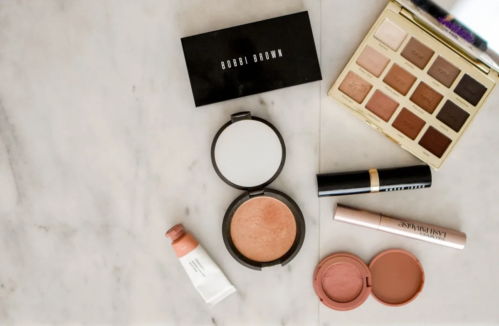
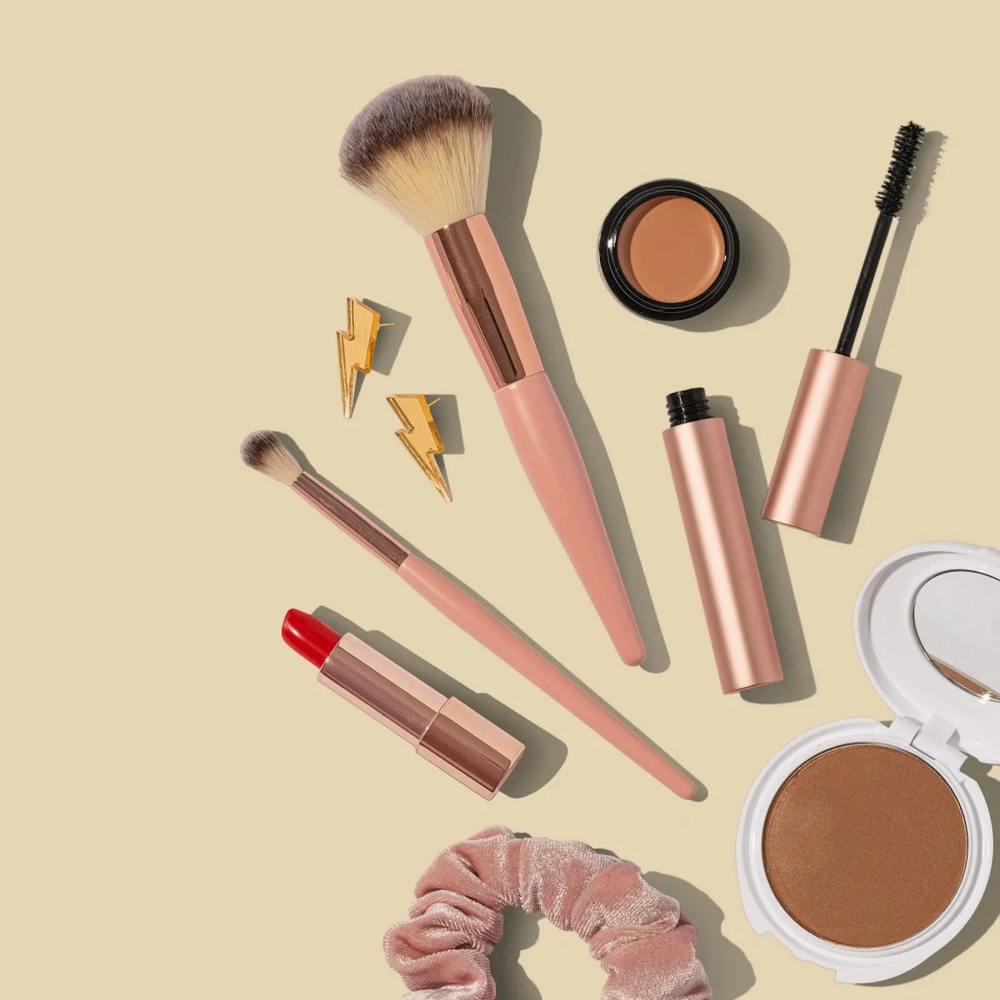
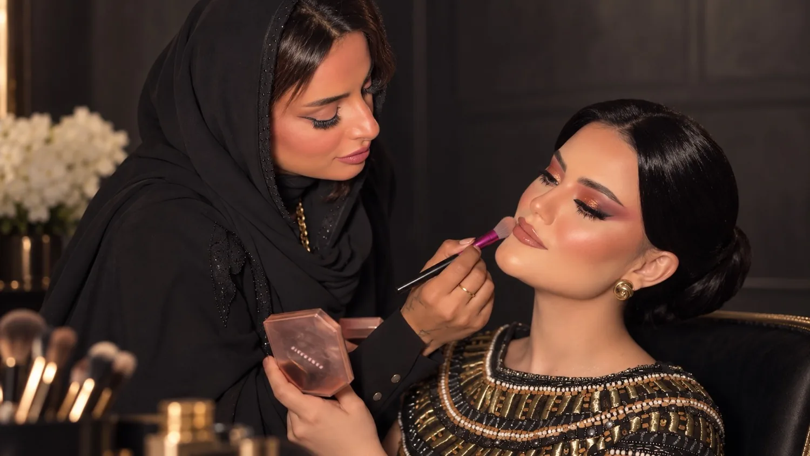
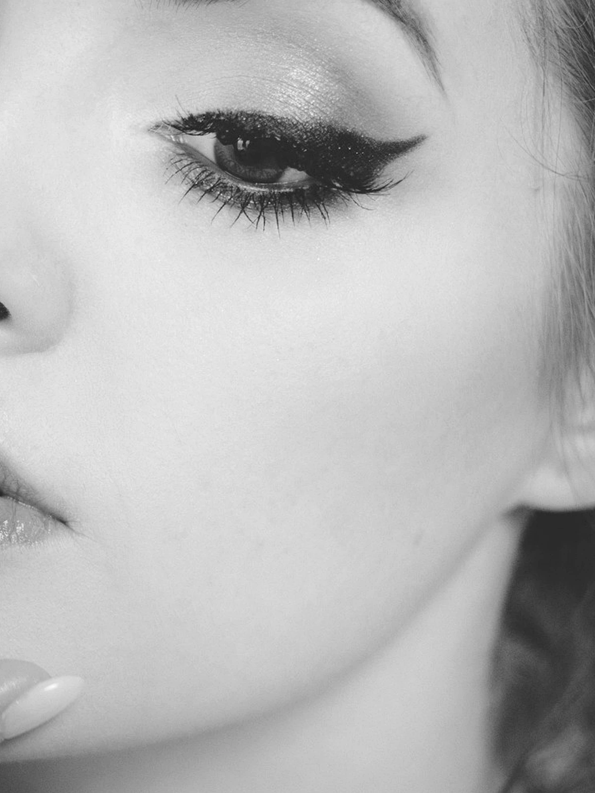
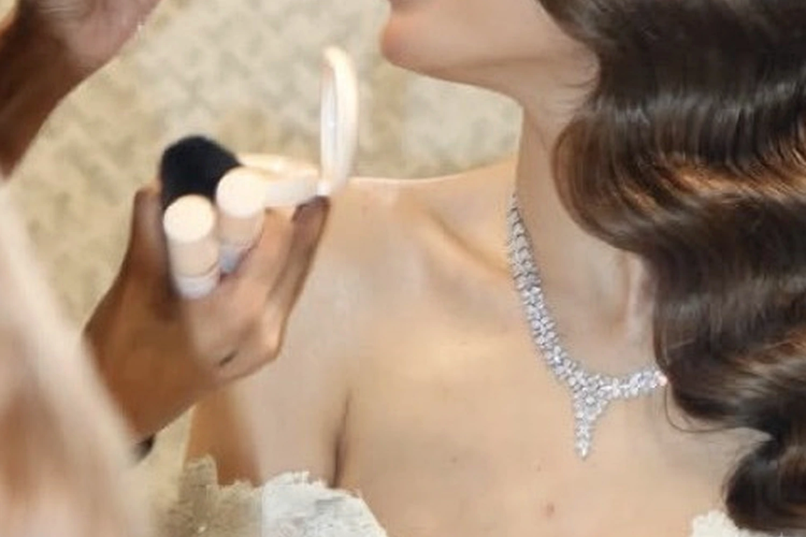

لماذا من هنا
الدرجة لا تُخمَّن. هدى تقرأ الوجه قبل الشحن.
هذه ليست رفّاً عشوائياً. هذه العلب التي تلمس بشرتكِ في الأتيليه. تُطلب مسبقاً، وتُظلل درجتها معكِ. وإذا اكتمل الطلب يصل امتياز على خدمتها.
الدرجة لا تُخمَّن. هدى تقرأ الوجه قبل الشحن.
التوفر والسعر يُؤكدان قبل الدفع.
على Event Signature أو Skin Architecture خلال 45 يوماً بعد طلب مؤهل مكتمل.
المنتج يدخل ملف إطلالتكِ.

FENTY BEAUTY · RIHANNAالعلبة السداسية في يد هدى. ضوء على أعلى الخد، لا طبقة تفضح البشرة تحت الفلاش.
امتياز الخدمة + تثبيت الدرجة في ملفكِ.
الشركة: Fenty Beauty LLC / LVMH. بودرة مضغوطة: تالك، ميكا، ديمثيكون، سليكا، أكسيد تيتانيوم.

FENTY BEAUTYغبار بارد للنهار، وبلورة دافئة لليل. هدى تنتقل بينهما حسب حرارة الغرفة.
امتياز الخدمة بعد اكتمال الطلب.
الشركة: Fenty Beauty LLC. وزن تقريبي 2×3.5غ. ميكا عاكسة ناعمة.

CHARLOTTE TILBURYفم يبدو لونكِ بعد حياة، لا أحمر مستعار.
يُحفظ رقم الدرجة. الامتياز يسري.
الشركة: Charlotte Tilbury Beauty Ltd، لندن. شموع نباتية وأصباغ حديدية وزيوت خفيفة.

CHARLOTTE TILBURYالخط الذي يمنع الفم من الهروب تحت الحرارة والكلام.
الشركة: Charlotte Tilbury Beauty Ltd. قلم شمعي، كانديليلا وأصباغ ناعمة.

DIORأساس تبقى فيه البشرة مرئية. يُبنى طبقة فوق طبقة.
الدرجة تُقاس على الفك لا على اليد.
الشركة: Parfums Christian Dior، باريس. تغطية متوسطة، ماء وسليكونات خفيفة وأصباغ معالجة.

MAKE UP FOR EVERتصحيح لا يأكل الضوء تحت العين.
الشركة: Make Up For Ever / LVMH. كريمي مقاوم للتكتل تحت العدسة.

CLINIQUEقبل اللون، البشرة تُسقى. يظهر في محطات هدى حين تكون البشرة عطشى.
الشركة: Clinique / Estée Lauder. غليسيرين وزيوت خفيفة، شبه خالٍ من العطر.

ARMANI BEAUTYحرير لا قناع. وجه امرأة حيّة في نور جدة.
الشركة: Giorgio Armani Beauty / L’Oréal. مستحلب حريري بتغطية متوسطة.

CHANELماء أكثر مما هو مكياج. للنهار الذي لا يحتمل وجهاً ثقيلاً.
الشركة: Chanel Parfums Beauté. لمسة مائية وأصباغ شفافة.
إذا اكتمل الطلب المؤهل، تُفتح نافذة خمسة وأربعين يوماً لجلستها بخصم 10٪. العرس الكامل والسفر ليسا داخل هذه النافذة.
الكونسيرج